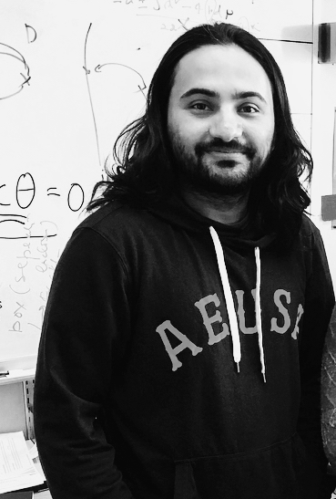

Shiva Poudel
|  |
Contact: |
Research Interests
Electric power systems
Distribution system modeling and analysis
Power systems restoration
Optimization algorithms and applications
Education
- B.E. in Electrical Engineering (2009-2013)
- -Institute of Engineering, Tribhuvan University, Lalitpur, Nepal
- M.S in Electrical Engineering (2014-2016)
- -South Dakota State University, Brookings, SD, USA
- -Adviser: Dr. Zhen Ni
- -Thesis: Cascading failures and contingency analysis for smart grid security
- Ph.D. in Electrical Engineering (2016-Present)
- -Washington State University, Pullman, WA, USA
- -Adviser: Dr. Anamika Dubey
Work Experience
- Graduate Research Assistant (Aug 2016- Present)
- -Washington State University, Pullman, WA, USA
- -Superviser: Dr. Anamika Dubey
- Graduate Summer Intern (May 2019- Aug 2019)
- -Electric Power Research Institute, Palo Alto, CA, USA
- -Superviser: Dr. Tomos Tinoco De Rubira
- Graduate Summer Intern (May 2018- Aug 2018)
- -Mitsubishi Electric Research Laboratories, Cambridge, MA, USA
- -Superviser: Dr. Hongbo Sun
- Graduate Research Assistant (Aug 2015- Aug 2016)
- -South Dakota State University, Brookings, SD, USA
- -Superviser: Dr. Zhen Ni
- Graduate Teaching Assistant (Aug 2014- Aug 2015)
- -South Dakota State University, Brookings, SD, USA
- -Superviser: Dr. Wei Sun